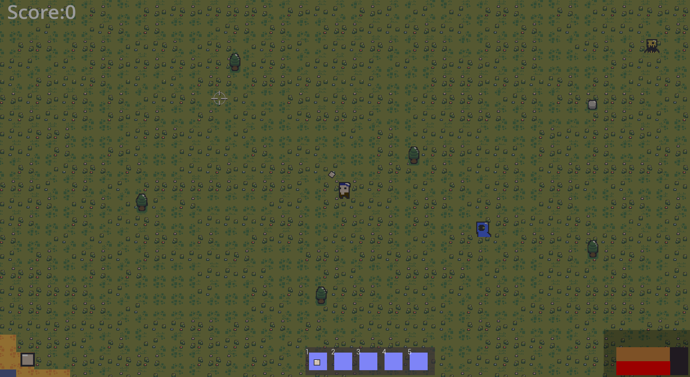
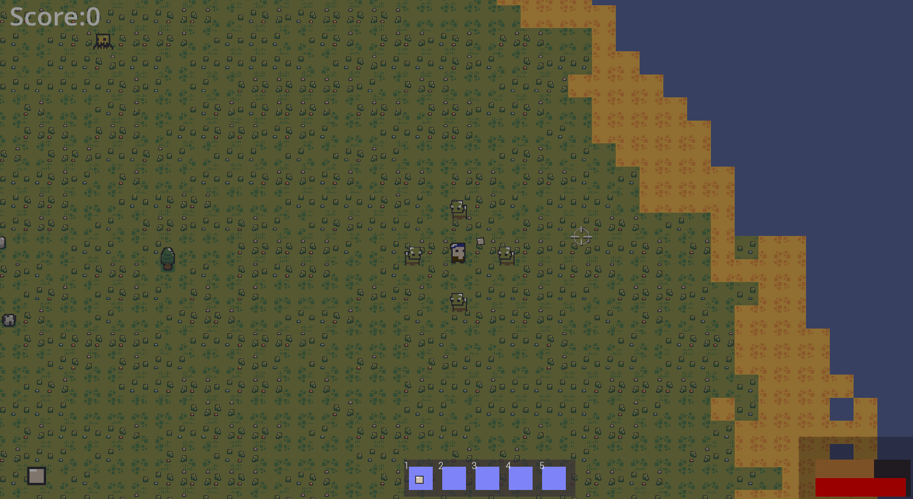
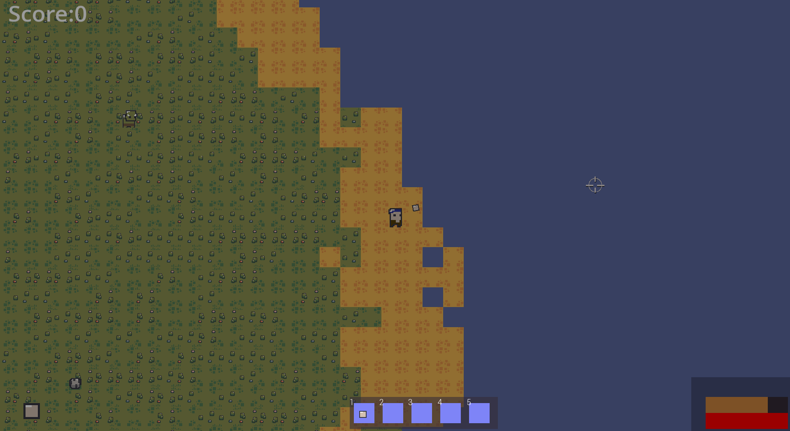
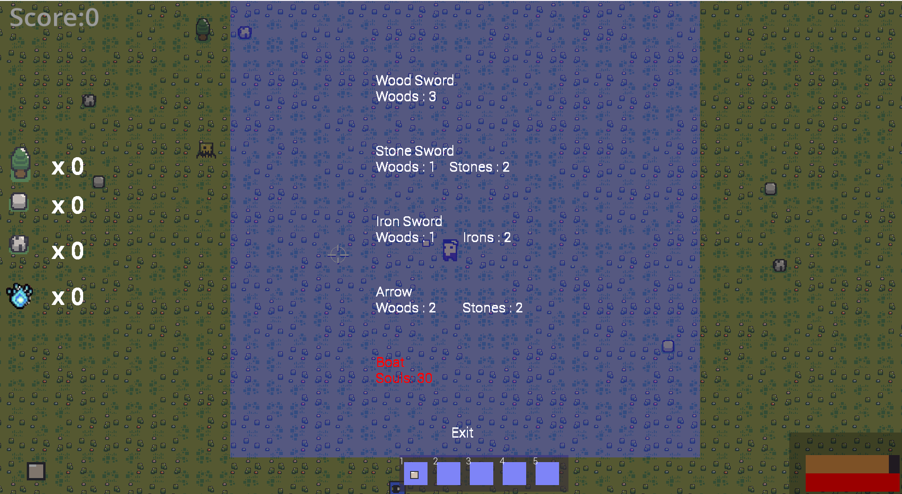
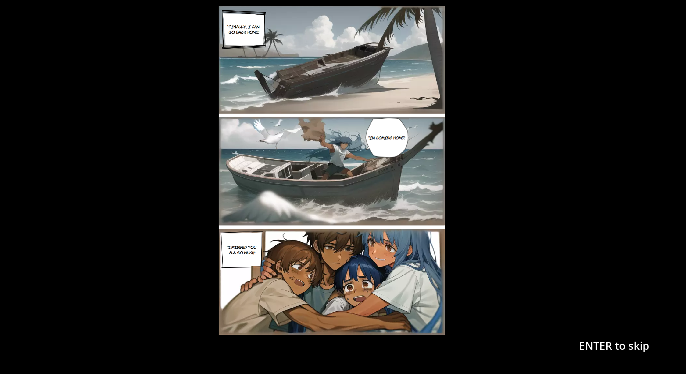

Island 51 is a 2D top-down horror survival game where the player has to kill enemies and gather resources in order to survive and escape the Island.
The game was built using the coding language C++ and the library SFML.
Project Instructions
Main Menu
Press the key with the number 1 to play the game.
Press the key with the number 2 to see the rules.
Press the key with the number 3 to see the high scores.
Press the key with the number 4 to close the game.
Rules
Press the key "Escape" to go back to the Main Menu.
High Scores
Press the key "Escape" to go back to the Main Menu.
Game Controls
Press the key "W" to move the player up.
Press the key "S" to move the player down.
Press the key "A" to move the player left.
Press the key "D" to move the player right.
Click on the Left mouse button to perform an attack.
Press "Enter" to pause the game.
HUD (Heads-Up Display)
Bottom right: Red bar - Player health. Decreases if damaged or hunger is low.
Bottom right: Brown bar (above health) - Player hunger. Decreases over time.
Top left: Player current score.
Press "Tab" to open/close resources inventory.
Press "Q" to open crafting menu. Use "W" and "S" to navigate, Left Shift to craft.
Bottom center: Rectangle with blue squares - Weapons inventory. Use numbered keys to switch weapons.
Bottom left: Ammo display.
Weapons
Different weapons take different damage and have different durability.
Iron weapons take more damage and last longer. Stone weapons take less damage. Wood weapons have the least durability.
The player starts with fists, which won't be destroyed.
Resources
Stone, Iron, and Wood are randomly generated throughout the map.
Collect resources by attacking them.
Souls can be obtained by killing enemies.

Enemies
Different types of enemies are randomly generated with different behaviors and health.
Kill enemies to obtain food, health, or souls.

Map
Move freely through the map, avoiding water.

Crafting the Boat
In the crafting menu, there is an option to craft a boat.
Gather enough souls to build a boat and escape the island.

In Case of Victory
A final storyboard will appear, comparing the player's score to the top five high scores.

In Case of Death
The player will be redirected to the main menu, and the score will be reset to zero.
They can continue playing but need to earn the score back.